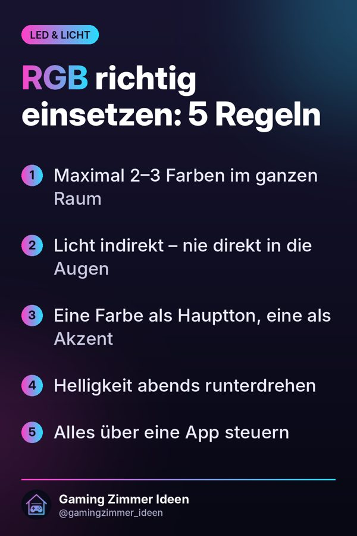

Ideen › LED Beleuchtung Gaming Zimmer
RGB richtig einsetzen: 5 Regeln für ein stimmiges Gaming-Zimmer

RGB Beleuchtung im Gaming Zimmer sieht nur dann richtig gut aus, wenn sie stimmig ist. Mit diesen 5 Regeln wird dein Setup nicht zur Disco: wenige Farben, indirektes Licht, eine Hauptfarbe mit Akzent, abends gedimmt und alles zentral per App steuerbar.
Auf einen Blick
- Maximal 2–3 Farben im ganzen Raum
- Licht indirekt – nie direkt in die Augen
- Eine Farbe als Hauptton, eine als Akzent
- Helligkeit abends runterdrehen
- Alles über eine App steuern